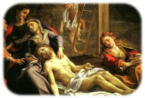
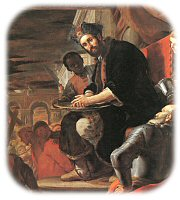
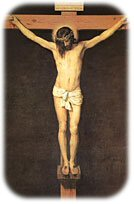
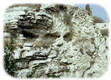

| Crucifixion | ||

|
 Qui est responsable de la mort de Jésus ?
Les différents auteurs des Évangiles tentent à plusieurs reprises de faire glisser la responsabilité de la condamnation de Jésus des Romains sur les Juifs, notamment lors de l'épisode de Pilate offrant à la foule la possibilité de libérer le prisonnier de son choix, comme c'était souvent la coutume, nous disent Marc et Matthieu, pour la fête de la Pâque. Mais en vérité, cette version des faits est totalement erronée et de nombreux savants s'accordent aujourd'hui à reconnaître que les Romains ne pratiquèrent jamais une politique semblable. L'offre du procurateur romain - Jésus ou Barrabas ? - est pure fiction, comme sont sa réticence à condamner Jésus et sa mauvaise grâce à céder aux pressions de la foule. En réalité, il était absolument impensable pour un représentant de la loi romaine, et particulièrement pour un homme aussi cruel que Pilate, de demander son avis au peuple, et encore moins de se plier à ses caprices. Tout le but de cette affabulation consistait en fait à dégager la responsabilité des Romains, à la transférer sur les Juifs et à faire de Jésus un personnage susceptible de ne pas déplaire aux futurs lecteurs des quatre Évangiles. |
||
|
Quelles furent les dernières paroles de Jésus ?
Les Évangélistes Matthieu (2:46) et Marc (15:34) rapportent que les dernières paroles de Jésus furent : Eli, Eli, lama sabachtani ? qui fut approximativement traduit en « Mon Dieu, mon Dieu, pourquoi m'as-tu abandonné ? ». Selon la plupart des commentateurs des Évangiles, cette phrase est extraite d'un psaume de David (Ps 21:2) qui s'applique trop bien à mort de Jésus sur la croix pour que sa récupération par les deux Évangélistes ne relève pas d'un pur « effet littéraire », sans véritable rapport avec la réalité historique. D'ailleurs, dans l'Évangile de Luc (23:45), Jésus meurt en prononcant un vers d'un autre psaume de David : « Père, entre tes mains, je remets mon esprit ! » (Ps 31:6), tandis que chez Jean (19:30), il se contente d'une parole laconique : « Tout est accompli ! ». Les dernières paroles de Jésus varient donc d'un évangile à l'autre, et ce, sans doute, en fonction du projet théologique poursuivi par les auteurs de ces textes. Le philosophe Porphyre ne manquera pas de s'appuyer sur ces incertitudes pour mettre en cause l'ensemble du « témoignage » chrétien sur la mort de Jésus : « Il est clair que cette fiction incohérente, ou bien représente plusieurs crucifiés, ou bien en représente un seul qui meurt si mal, qu'il ne donne à ceux qui sont là aucune idée nette de ce qu'il souffre. Mais si ces gens-là n'étaient pas capables de dire véridiquement comment Jésus est mort et n'ont fait que de la littérature, c'est que sur tout le reste, ils n'ont rien non plus qui mérite confiance ».
 Dans son Jésus ou le mortel secret des Templiers, Robert Ambelain avance une hypothèse confortant l'idée que Jésus aurait été initié à la Magie : D'une part, il rappelle que l'alphabet hébreu ne possède que des consonnes et qu'une prononciation voyellisée n'est possible qu'avec l'ajout d'une ponctuation placée sous les lettres, et il remarque que les trois lettres du nom Elie (aleph - lamed - hé), ponctuées de façon différente, signifient « conjurer », « maudire ». D'autre part, il précise que dans les plus vieux manuscrits de Magie (Clavicules de Salomon) dont les textes nous sont parvenus grâce à Pierre d'Abane, disciple d'Henri-Cornelius Agrippa, il est expliqué qu'un magicien profère une conjuration en invoquant des Noms Divins (nom des Anges) qui diffèrent selon le lieu, le jour et l'heure de l'opération et l'objet de la malédiction. Fort de ces informations, l'auteur s'aperçoit tout d'abord que parmi les démons liés au Mardi, on trouve El et Elohim, pluriel d'Eloï ; il remarque ensuite que ce jour-là, parmi les noms des esprits gouvernant la région ouest du monde (traditionnellement celle des morts), on relève les noms Lama et Astagna ; enfin, parmi les douze Esprits qui gouvernent aux heures du Mardi, il trouve Tani (ou Tanic ou Tanie). Ambelain en déduit alors que la dernière phrase prononcée par Jésus pourrait être ELi ! ELOIm ! LAMA ASTAGNA TANI... qui équivaut à « Conjuration ! Malédiction ! Par Lama, Astagna, Tani... ». Son hypothèse est d'ailleurs renforcée par les faits :1. Selon Jean, Jésus est mort « le jour où l'on sacrifiait l'agneau pascal » ; dans le calendrier zélote, ce jour était un Mardi. 2. Tous les mots de cette phrase sont des noms utilisés en Magie et ils le sont exactement dans l'ordre hiérarchique de leur emploi. 3. Tous ces noms ne relèvent que de la seule tonalité de Mars, y compris le nom de l'Esprit gouvernant l'heure (Tani). 4. Cette heure est justement et exactement la huitième du jour, qui est la dernière que vécut Jésus et au cours de laquelle il prononça la fameuse phrase. 5. Tous les noms cités sont ceux d'Esprits qu'on appelle pour faire du mal à des ennemis (causer des batailles, des meurtres, des incendies, des maladies, lever une armée, etc.), et c'est exactement ce qui arriva à Jérusalem, très peu de temps après la mort de Jésus : révolte des militants Zélotes, guerre avec Rome, siège de la Ville Sainte avec toutes ses horreurs, mystérieuses épidémies, etc. Il est donc possible et même probable que les derniers mots de Jésus, agonisant dans d'affreuses souffrances, soient un appel aux puissances ténébreuses (lés démons) pour maudire la ville de Jérusalem qui l'a abandonné dans sa tentative de libération du joug romain. |
||
|
 Où Jésus a-t-il été crucifié ?
A Jérusalem, à l'intérieur de la basilique du Saint-Sépulcre, à côté de son tombeau, on contemple encore aujourd'hui l'endroit où Jésus aurait été crucifié : le Golgotha, qui veut dire « le lieu du crâne » en araméen. Or, ce lieu n'a été « découvert » qu'au quatrième siècle, parce que l'empereur romain Constantin, fraîchement converti au christiannisme, ordonna de rechercher le Golgotha et la tombe de Jésus. C'est l'évêque Macaire qui fut désigné pour effectuer cette tâche. Les sources officielles étant résolument muettes quant à l'existence d'un emplacement réservé aux exécutions capitales, celui-ci choisit d'entrer en prière pour obtenir l'aide de Dieu lui-même. Il fut exaucé et eut, en extase, la vision de la localisation du Golgotha à l'endroit où on le vénère actuellement. A la suite d'une « révélation », au sens le plus mystique du terme, cet évêque est donc « l'inventeur » du Golgotha, au sens archéologique du mot. Dans l'Évangile de Jean, on lit la description suivante : « Or, il y avait un jardin au lieu où il a été crucifié » (19:41) ; selon Matthieu (27:60), ce jardin était même la propriété personnelle de Joseph d'Arimathie, homme riche et disciple secret de Jésus. De plus, à l'époque de Jésus, l'usage exigeait la présence d'un cimetière à proximité du lieu des crucifixions, ne serait-ce que pour y déposer le corps des supliciés à la fin de leur calvaire. Rien de tout cela au Golgotha : ni jardin sur cette colline totalement dénudée, ni cimetière - la proximité du Temple, lieu sacré s'il en fut, l'interdisait, car un cimetière, lieu impur par excellence, surtout s'il s'accompagnait d'un emplacement d'exécution, aurait profané le lieu saint. On a donc « choisi » le Golgotha au quatrième siècle, comme lieu d'exécution de Jésus, pour son nom, pour la légende qui l'accompagnait, et aussi... pour la commodité des pèlerins. A une époque où il ne demeurait plus rien de la ville qui avait vu mourir Jésus, où nulle carte de la Jérusalem ancienne n'existait, où l'archéologie et ses disciplines, relevant de celles de l'histoire, étaient totalement inimaginables, où la naïveté des fidèles était absolument sans borne et où la foi était toujours préférée à la critique rationnelle, on peut raisonnablement avoir quelques doutes quant au résultat de « l'enquête » de l'évêque Macaire. |
||
|
La mort de Jésus décrite dans les Évangiles n'est-elle qu'une pâle copie des anciennes prophéties ?
La mort (nécessaire) du Messie était annoncée par les prophètes de l'Ancien Testament. Et même dans le détail : Il était écrit qu'il serait frappé de verges, qu'on lui cracherait à la figure, qu'il resterait stoïque dans l'adversité, qu'il mourrait entre des malfrats, que ses pieds et ses mains seraient déchiquetés, qu'aucun os ne lui serait brisé, que pour toute boisson on lui tendrait du vinaigre et du fiel, qu'il revivrait au bout de trois jours etc. Toutes ces prophéties étaient consignées dans des recueils qui circulaient dans le monde juif de Palestine, auxquels se référaient ceux d'entre les croyants qui attendaient l'arrivée prochaine de leur libérateur. Ces messianistes étaient des groupes sectaires juifs (certains de leurs documents ont été retrouvés à Qumrân), qui avaient élaboré une théologie axée sur le « Messie souffrant » tel que le présente Isaïe. Depuis le IIème siècle avant notre ère, ils vivaient dans l'attente imminente du retour du « Maître de Justice ». Il n'est donc pas étonnant de retrouver la saveur de leurs croyances dans les Évangiles. Selon Dupont-Sommer, un spécialiste de l'étude des manuscrits de la mer Morte, Jésus, tel que nous le présentent les Évangiles, apparaît à bien des égards comme une étonnante réincarnation de ce « Maître de Justice » (prêtre juif, chef de la secte essénienne, mort vers -65). Comme celui-ci, il prêcha la pénitence, l'humilité, l'amour du prochain, la chasteté. Comme lui, il prescrivit d'observer la Loi de Moïse, toute la Loi, mais la Loi achevée, parfaite grâce à ses propres révélations. Comme lui, il fut l'Elu et le Messie de Dieu, le Messie rédempteur du monde. Comme lui, il fut en butte à l'hostilité des prêtres du parti des Sadducéens. Comme lui, il fut condamné et supplicié. Comme lui, il monta au ciel près de Dieu. Comme lui, à la fin des temps, il sera le nouveau juge. Quel crédit peut-on accorder à des récits composés exclusivement de textes préexistants ? Où est la tradition vivante ? Où sont les témoignages ? Où sont les faits ? En effet, si l'on retire les événements qui n'ont pas fait l'objet d'une référence scripturaire, que reste-t-il du récit de la mort du Christ rapporté par les évangélistes ? La croix ? On la trouve dans de nombreuses religions antérieures au christianisme, sans parler de la croix cosmique de Platon, formée par le croisement des deux axes du monde, dont le gnosticisme reprend les éléments pour y placer le Logos. La rédemption par le sacrifice d'un dieu ? On la trouve dans les religions à mystères, où il est question d'un dieu souffrant qui meurt et ressuscite pour ses fidèles à l'équinoxe de printemps, à l'heure où la vie de la nature reprend ses droits sur l'hiver. Chaque année Tammouz (Adonis), Osiris, Attis mouraient (Attis, pendu à un pin) et ressuscitaient après trois jours. Durant leur « mort terrestre », Adonis, Attis, la déesse Ishtar, Orphée, descendaient comme Jésus aux Enfers. La plupart de ces dieux étaient salués du titre de « Seigneur »" (ce qui se traduit en grec par Kyrios) titre que la communauté chrétienne d'Antioche et plus tard l'Église de Rome accorderont à Jésus. On leur attribuait la qualité de « Sauveur » (Sôter en grec), comme on le fera également pour le Christ. Le plus ressemblant de ces dieux avec Jésus est sans conteste Mithra. Comme Jésus, il est considéré comme « Fils de la droite du Père brillant ». Comme Jésus, il a cette caractéristique rare d'être célibataire. Lui aussi meurt puis ressuscite. Lui aussi revient à la fin des temps pour juger « les vivants et les morts », lesquels ressusciteront à leur tour dans la chair. Son culte comprend un repas commémoratif et un baptême d'initiation. Enfin, on fêtait traditionnellement la naissance de Mithra... le 25 décembre. |
||